अध्याय 26: Tout, chaque, quelqu’un…¶
Les indéfinis
सारा, हर, प्रत्येक, कुछ, थोड़े-से, कई, कोई, कुछ भी, वही, ऐसा — इन छोटे शब्दों को indefinites (अनिश्चित शब्द) कहते हैं, क्योंकि ये लोगों और चीज़ों के बारे में बात करते हैं, बिना ठीक-ठीक बताए कि कौन-से। फ़्रेंच में ये हर जगह मिलते हैं। कुछ adjectives की तरह agree करते हैं, कुछ कभी नहीं बदलते, और एक — tous — तो अपना उच्चारण भी बदल लेता है।
- 1Tout, toute, tous, toutes
- 2Chaque या chacun?
- 3Quelques, quelqu’un, quelque chose, quelque part
- 4कोई नहीं, कुछ नहीं, एक भी नहीं: नकारात्मक पक्ष
- 5मात्रा का पैमाना: aucun, quelques, plusieurs, certains, tous
- 6N’importe qui, quoi, où… — “कोई भी, कुछ भी”
- 7Autre, même और tel
- 8Agreement एक नज़र में
- 9सीखने वालों की असली ग़लतियाँ — और एक पार्टी की योजना
पुल्लिंगस्त्रीलिंगबहुवचन
एक लाइन में
Indefinites बिना नाम लिए बताते हैं कि कितने या कौन-से। कुछ noun से पहले आते हैं (chaque jour, quelques amis); कुछ उसकी जगह लेते हैं (chacun, quelques-uns, tous)।
26.1 Tout, toute, tous, toutes¶
Tout सबसे आम indefinite है, और इसके तीन काम हैं: adjective (noun से पहले), pronoun (noun की जगह) और adverb (adjective से पहले)। इन्हें एक-एक करके सीखो।
Adjective के रूप में: “सारा, पूरा, हर”¶
Noun से पहले tout उस noun से agree करता है और आम तौर पर उसके बाद article आता है (le, la, les, mes, ces…)।
| Singular — पूरा | Plural — सारे, हर | |
|---|---|---|
| Masculine | tout le gâteau | tous les jours |
| Feminine | toute la journée | toutes les semaines |
- Il a mangé tout le gâteau. — उसने पूरा केक खा लिया।
- J’ai travaillé toute la journée. — मैंने दिन भर काम किया।
- Je fais du sport tous les matins. — मैं हर सुबह कसरत करता हूँ। (adjective वाला tous = [too], s मौन) [too lay ma-Tɛ̃]
- Toutes mes amies sont venues. — मेरी सारी सहेलियाँ आईं।
- Tout le monde est là. — सब लोग यहाँ हैं। (tout le monde = सब लोग — verb एकवचन में!)
Article के बिना, एकवचन tout / toute सामान्य कथनों और तय मुहावरों में “कोई भी, हर” का मतलब देता है: à tout moment (किसी भी पल), en tout cas (हर हाल में), tout le temps (हर समय), toute personne (कोई भी व्यक्ति — औपचारिक सूचनाओं में)। और tous les deux / toutes les deux = दोनों।
- Nous sommes tous les deux d’accord. — हम दोनों सहमत हैं।
- Toute personne sans billet paiera une amende. — बिना टिकट वाले हर व्यक्ति को जुर्माना देना होगा। (बोर्ड पर लिखा आम वाक्य)
Pronoun के रूप में: tout = सब कुछ, tous [tus] = वे सब¶
अकेला tout का मतलब “सब कुछ” है। Tous और toutes का मतलब “वे सब” है। उच्चारण का जाल यहाँ है: pronoun वाला tous [tus] बोला जाता है, s के साथ। (noun से पहले आने वाला) adjective वाला tous [too] है।
- Tout va bien. — सब कुछ ठीक है।
- J’ai tout compris. — मैं सब कुछ समझ गया। (छोटे adverb की तरह: participle से पहले)
- Mes cousins ? Ils sont tous venus. — मेरे कज़िन? वे सब आए। — [TUS] बोलो [eel sõ TUS vuh-NEW]
- Ces films, je les ai tous vus. — ये फ़िल्में — मैंने सब देख ली हैं। [TUS]
- Les filles sont toutes parties. — लड़कियाँ सब चली गई हैं।
- Bonjour à tous ! — सभी को नमस्ते! [ta TUS]
tous: [too] या [tus]?
Noun से पहले tous [too] है: tous les jours। Pronoun के रूप में (अकेला), यह [tus] है: ils sont tous là, bonjour à tous।
Adverb के रूप में: “बहुत, पूरी तरह”¶
Adjective से पहले tout का मतलब “काफ़ी, बहुत” होता है: il est tout petit, elle est toute petite, elle est tout heureuse। नियम (यह सिर्फ़ consonant से शुरू होने वाले feminine adjective से पहले agree करता है) Adverbs में समझाया गया है। संभावित उलझन पर ध्यान दो: elles sont toutes contentes का मतलब “वे बहुत ख़ुश हैं” भी हो सकता है और “वे सब ख़ुश हैं” भी — संदर्भ तय करता है।
26.2 Chaque या chacun?¶
दोनों का मतलब “हर / प्रत्येक” है, पर काम अलग हैं। Chaque adjective है: यह हमेशा एकवचन noun से पहले आता है और कभी नहीं बदलता। Chacun / chacune pronoun है: यह noun की जगह लेता है और gender में उससे agree करता है। दोनों हमेशा एकवचन होते हैं।
| शब्द | काम | उदाहरण |
|---|---|---|
| chaque + noun | adjective, अपरिवर्तनीय | chaque jour, chaque semaine |
| chacun | pronoun, पुल्लिंग | Chacun a son avis. |
| chacune | pronoun, स्त्रीलिंग | Chacune de mes sœurs… |
- Chaque étudiant reçoit un badge. — हर छात्र को एक बैज मिलता है। (एकवचन noun, एकवचन verb)
- Chacun a son opinion. — हर किसी की अपनी राय होती है। (chacun → son, एकवचन)
- Chacune de mes sœurs habite dans une ville différente. — मेरी हर बहन अलग-अलग शहर में रहती है।
- Ces livres coûtent dix euros chacun. — ये किताबें दस यूरो की एक हैं।
- À chacun ses goûts. — हर किसी की अपनी पसंद। (एक कहावत)
chaque + noun, अकेला chacun
अगर बाद में noun आता है, तो chaque लगाओ (chaque jour)। अगर बाद में noun नहीं है, तो chacun/chacune लगाओ (dix euros chacun)।
Chaque jour और tous les jours क़रीब-क़रीब एक जैसे हैं। Chaque हर एक पर अलग से ज़ोर देता है; tous les नियमित आदत पर ज़ोर देता है। रोज़ की बोलचाल में tous les jours ज़्यादा सुनाई देता है।
26.3 Quelques, quelqu’un, quelque chose, quelque part¶
quelque परिवार “कुछ, थोड़े-से, कोई, कुछ चीज़, कहीं” को कवर करता है।
| फ़्रेंच | मतलब | उदाहरण |
|---|---|---|
| quelques + बहुवचन noun | कुछ, थोड़े-से | quelques amis |
| quelques-uns / -unes | उनमें से कुछ | j’en ai lu quelques-uns |
| quelqu’un | कोई (व्यक्ति) | Quelqu’un a appelé. |
| quelque chose | कोई चीज़, कुछ | J’ai quelque chose pour toi. |
| quelque part | कहीं | Mes clés sont quelque part. |
| quelquefois | कभी-कभी | On sort quelquefois. |
- J’ai quelques questions. — मेरे कुछ सवाल हैं।
- Ses romans ? J’en ai lu quelques-uns. — उसके उपन्यास? मैंने उनमें से कुछ पढ़े हैं। (en के साथ — देखो Y, en & pronoun order)
- Des pommes ? Il en reste quelques-unes. — सेब? कुछ बचे हैं। (pomme स्त्रीलिंग है → quelques-unes)
- Quelqu’un a laissé un message. — किसी ने संदेश छोड़ा है।
- Il y a quelque temps, j’habitais à Lille. — कुछ समय पहले मैं लिल में रहता था। (एकवचन quelque: सिर्फ़ ऐसे तय मुहावरों में)
quelqu’un de… / quelque chose de… + adjective¶
Adjective जोड़ने के लिए बीच में de लगाओ, और adjective को पुल्लिंग ही रखो। यही pattern rien, personne और autre के साथ भी चलता है।
- C’est quelqu’un de très gentil. — वह बहुत भला इंसान है। (औरत के लिए भी gentil पुल्लिंग ही रहता है)
- Tu veux boire quelque chose de chaud ? — क्या तुम कुछ गरम पीना चाहोगे?
- Rien de nouveau. · Personne d’autre. — कुछ नया नहीं। · और कोई नहीं।
quelque chose de bon
quelqu’un / quelque chose / rien / personne + de + पुल्लिंग adjective: quelque chose de bon, quelqu’un d’intelligent, rien de grave।
26.4 कोई नहीं, कुछ नहीं, एक भी नहीं: नकारात्मक पक्ष¶
हर “कुछ” वाले शब्द का एक “नहीं” वाला साथी है। Personne, rien, aucun(e) और nulle part के लिए verb से पहले ne चाहिए; इनका पूरा grammar (past में जगह, pas de, ne… que) Saying no में है। यहाँ हम जोड़ियों पर और इन्हें subject की तरह इस्तेमाल करने पर ध्यान देते हैं।
| Positive | Negative | उदाहरण |
|---|---|---|
| quelqu’un, tout le monde | ne… personne | Je ne vois personne. |
| quelque chose, tout | ne… rien | Je ne comprends rien. |
| quelques, plusieurs, tous | ne… aucun(e) | Je n’ai aucune idée. |
| quelque part, partout | ne… nulle part | Je ne le trouve nulle part. |
- Personne n’est venu. — कोई नहीं आया। (subject के रूप में: personne + ne + verb, pas नहीं)
- Rien n’a changé. — कुछ नहीं बदला।
- Aucun de mes amis n’a répondu. — मेरे किसी भी दोस्त ने जवाब नहीं दिया। (aucun एकवचन है → a répondu)
- — Tu as des questions ? — Non, aucune. — क्या तुम्हारे कोई सवाल हैं? — नहीं, एक भी नहीं। (स्त्रीलिंग: question)
26.5 मात्रा का पैमाना: aucun, quelques, plusieurs, certains, tous¶
मात्रा बताने वाले शब्दों को एक लाइन में रखो, शून्य से सब कुछ तक। हर एक noun से पहले और अकेले pronoun के रूप में भी चलता है।

Plusieurs: कई¶
Plusieurs कभी नहीं बदलता (स्त्रीलिंग रूप नहीं है), article नहीं लेता, और हमेशा बहुवचन होता है।
- Je l’ai appelé plusieurs fois. — मैंने उसे कई बार फ़ोन किया। (fois स्त्रीलिंग है — plusieurs वैसा ही रहता है)
- Des vélos ? On en a plusieurs. — साइकिलें? हमारे पास कई हैं।
Certain(e)s: कुछ (सब नहीं)¶
बहुवचन noun से पहले certains / certaines article नहीं लेता और agree करता है। Pronoun के रूप में certains का मतलब “कुछ लोग” है। एकवचन में noun से पहले un certain का मतलब “एक ख़ास” है; noun के बाद certain का मतलब “पक्का” है।
- Certaines personnes ne mangent pas de viande. — कुछ लोग मांस नहीं खाते।
- Certains pensent que c’est trop cher. — कुछ (लोग) सोचते हैं कि यह बहुत महँगा है।
- un homme d’un certain âge · une victoire certaine — एक ख़ास उम्र का आदमी (अधेड़) · एक पक्की जीत
plusieurs, certains, quelques के साथ article नहीं
plusieurs amis, certains amis, quelques amis कहो — “des plusieurs” या “les certains” कभी नहीं।
26.6 N’importe qui, quoi, où… — “कोई भी, कुछ भी”¶
N’importe (शब्दशः “कोई फ़र्क़ नहीं पड़ता”) + कोई question word का मतलब है “कोई भी … चलेगा, कोई फ़र्क़ नहीं पड़ता कौन-सा”। इसमें अक्सर थोड़ा नकारात्मक स्वर होता है: लापरवाही, बेतरतीबी, मामूलीपन।
| फ़्रेंच | मतलब | उदाहरण |
|---|---|---|
| n’importe qui | कोई भी (व्यक्ति) | N’importe qui peut le faire. |
| n’importe quoi | कुछ भी; बकवास | Il dit n’importe quoi. |
| n’importe où | कहीं भी | On peut dormir n’importe où. |
| n’importe quand | कभी भी | Appelle-moi n’importe quand. |
| n’importe comment | जैसे-तैसे, लापरवाही से | Ne range pas n’importe comment. |
| n’importe quel(le)(s) + noun | कोई भी (+ noun) | n’importe quelle couleur |
| n’importe lequel / laquelle… | उनमें से कोई भी एक | Prends n’importe lequel. |
- Ce n’est pas difficile : n’importe qui peut le faire. — यह मुश्किल नहीं है: कोई भी इसे कर सकता है।
- Arrête de dire n’importe quoi ! — बकवास करना बंद करो!
- Viens n’importe quand, je suis à la maison. — कभी भी आ जाओ, मैं घर पर हूँ।
- — Quel stylo je prends ? — N’importe lequel. — मैं कौन-सा पेन लूँ? — कोई भी। (stylo पुल्लिंग है → lequel)
- Ce travail a été fait n’importe comment. — यह काम लापरवाही से किया गया है।
quelqu’un या n’importe qui?
quelqu’un = कोई ख़ास व्यक्ति जिसका आप नाम नहीं ले रहे; n’importe qui = कोई भी व्यक्ति, चाहे जो हो।
26.7 Autre, même और tel¶
Autre: दूसरा, और, एक-दूसरे¶
Autre सिर्फ़ वचन में agree करता है (autre / autres)। बहुवचन पर ध्यान दो: noun से पहले des + adjective बदलकर de हो जाता है, इसलिए “दूसरे विचार” d’autres idées है, “des autres idées” नहीं।
- Tu veux un autre café ? — क्या तुम एक और कॉफ़ी लोगे?
- Il y a d’autres solutions. — और भी हल हैं।
- Les autres sont déjà partis. — बाक़ी लोग पहले ही जा चुके हैं।
- J’ai deux frères : l’un est médecin, l’autre est ingénieur. — मेरे दो भाई हैं: एक डॉक्टर है, दूसरा इंजीनियर है।
- Les voisins s’aident les uns les autres. — पड़ोसी एक-दूसरे की मदद करते हैं। (l’un l’autre / les uns les autres = एक-दूसरे)
- Tu veux autre chose ? · Demande à quelqu’un d’autre. — क्या तुम्हें कुछ और चाहिए? · किसी और से पूछो।
Même: वही, खुद, भी¶
| इस्तेमाल | मतलब | उदाहरण |
|---|---|---|
| le / la / les + même(s) + noun | वही, एक जैसा | le même prix, les mêmes erreurs |
| stressed pronoun + -même(s) | मैं खुद, वह खुद… | moi-même, eux-mêmes |
| même (adverb, अपरिवर्तनीय) | तक भी | Même les enfants ont ri. |
| même si + indicative | भले ही | même s’il pleut |
- On a les mêmes chaussures ! — हमारे जूते एक जैसे हैं! (même वचन में agree करता है)
- J’ai fait ce gâteau moi-même. — यह केक मैंने खुद बनाया है। (साथ में: toi-même, lui-même, elle-même, nous-mêmes, vous-même(s), eux-mêmes, elles-mêmes)
- Même mon père a compris la blague. — मेरे पिताजी तक ने मज़ाक समझ लिया।
- Même s’il pleut, on va au marché. — भले ही बारिश हो, हम बाज़ार जाएँगे। (même si + indicative, si की तरह)
- Il faisait froid, mais on est sortis quand même. — ठंड थी, फिर भी हम बाहर निकले।
Tel, telle, tels, telles: ऐसा¶
Tel adjective की तरह agree करता है। Un tel / une telle = ऐसा (एक); बहुवचन में de tels / de telles (adjective से पहले de, des नहीं)। Tel que = जैसे कि।
- Je n’ai jamais entendu un tel bruit. — मैंने ऐसा शोर कभी नहीं सुना।
- De telles erreurs coûtent cher. — ऐसी ग़लतियाँ महँगी पड़ती हैं।
- des fruits tropicaux tels que la mangue et l’ananas — आम और अनानास जैसे उष्णकटिबंधीय फल (tels, fruits से agree करता है)
- Tel père, tel fils. — जैसा बाप, वैसा बेटा।
26.8 Agreement एक नज़र में¶
कौन-से indefinites बदलते हैं, और कौन-से कभी नहीं? इस तालिका को पास रखो।
| शब्द | रूप | वचन | उदाहरण |
|---|---|---|---|
| tout | tout, toute, tous, toutes | एकवचन / बहुवचन | toutes les filles |
| chaque | कभी नहीं बदलता | सिर्फ़ एकवचन | chaque fille |
| chacun | chacun, chacune | सिर्फ़ एकवचन | chacune d’elles |
| aucun | aucun, aucune | एकवचन (लगभग हमेशा) | aucune fille |
| quelques | quelques; pron. quelques-uns, quelques-unes | बहुवचन | quelques filles |
| quelqu’un · quelque chose | कभी नहीं बदलते | एकवचन, पुल्लिंग | quelque chose de beau |
| plusieurs | कभी नहीं बदलता | सिर्फ़ बहुवचन | plusieurs filles |
| certain | certains, certaines | बहुवचन (बिना article) | certaines filles |
| autre · même | autre(s) · même(s) | सिर्फ़ वचन | les mêmes filles |
| tel | tel, telle, tels, telles | एकवचन / बहुवचन | une telle fille |
एकवचन वाले शब्द
chaque, chacun, aucun, personne, rien, quelqu’un और tout le monde के साथ एकवचन verb आता है: tout le monde est là, chacun a son avis।
26.9 सीखने वालों की असली ग़लतियाँ — और एक पार्टी की योजना¶
Indefinites के जाल
- गलत: Tout le monde sont là.
- सही: Tout le monde est là.
-
क्यों: tout le monde व्याकरण में एकवचन है, भले ही उसका मतलब बहुत सारे लोग हो।
-
गलत: Ils coûtent cinq euros chaque.
- सही: Ils coûtent cinq euros chacun.
-
क्यों: बाद में कोई noun नहीं → pronoun chacun। chaque के बाद noun आना ज़रूरी है।
-
गलत: Chaques jours, je cours.
- सही: Chaque jour, je cours. / Tous les jours, je cours.
-
क्यों: chaque हमेशा एकवचन है और कभी -s नहीं लेता।
-
गलत: J’ai des autres idées.
- सही: J’ai d’autres idées.
-
क्यों: des + adjective + बहुवचन noun बदलकर de हो जाता है: d’autres, de telles।
-
गलत: C’est quelqu’un gentil. / quelque chose nouvelle
- सही: C’est quelqu’un de gentil. / quelque chose de nouveau
-
क्यों: de जोड़ो, और adjective को पुल्लिंग रखो।
-
गलत: Personne n’est pas venu.
- सही: Personne n’est venu.
-
क्यों: personne, rien और aucun, pas की जगह लेते हैं। दोनों कभी साथ नहीं लगाओ।
-
गलत: Ils sont tous là [too].
- सही: Ils sont tous là [TUS].
- क्यों: Pronoun वाला tous (जिसके बाद noun नहीं है) s के साथ बोला जाता है।
असली ज़िंदगी में — पार्टी की योजना¶
- — Alors, tout le monde vient samedi ? — — तो, क्या शनिवार को सब आ रहे हैं?
- — Presque. Ils ont tous répondu, sauf Karim. Plusieurs amis viennent avec quelqu’un. — — लगभग। करीम को छोड़कर सबने जवाब दे दिया है। कई दोस्त किसी को साथ ला रहे हैं।
- — Et pour manger ? Chacun apporte quelque chose ? — — और खाने के लिए? क्या हर कोई कुछ लेकर आ रहा है?
- — Oui, mais pas n’importe quoi ! La dernière fois, on avait les mêmes plats. — — हाँ, पर कुछ भी नहीं! पिछली बार हमारे पास एक जैसे ही व्यंजन थे।
- — C’est vrai, certains ont apporté trois salades et personne n’a pensé au dessert. — — सच है — कुछ लोग तीन-तीन सलाद ले आए और किसी ने मिठाई के बारे में नहीं सोचा।
- — Cette fois, je fais une liste. Même toi, tu auras une tâche ! — — इस बार मैं एक लिस्ट बना रहा हूँ। तुम्हारे ज़िम्मे भी एक काम होगा!
À retenir: याद रखो
- Indefinites बिना नाम लिए बताते हैं कि कितने या कौन-से। कुछ noun से पहले आते हैं (chaque jour, quelques amis); कुछ उसकी जगह लेते हैं (chacun, quelques-uns, tous)।
- Noun से पहले tous [too] है: tous les jours। Pronoun के रूप में (अकेला), यह [tus] है: ils sont tous là, bonjour à tous।
- अगर बाद में noun आता है, तो chaque लगाओ (chaque jour)। अगर बाद में noun नहीं है, तो chacun/chacune लगाओ (dix euros chacun)।
- quelqu’un / quelque chose / rien / personne + de + पुल्लिंग adjective: quelque chose de bon, quelqu’un d’intelligent, rien de grave।
- plusieurs amis, certains amis, quelques amis कहो — “des plusieurs” या “les certains” कभी नहीं।
- quelqu’un = कोई ख़ास व्यक्ति जिसका आप नाम नहीं ले रहे; n’importe qui = कोई भी व्यक्ति, चाहे जो हो।
26.10 अभ्यास — Indefinites¶
अभ्यास 1
Je cours ___ les matins.
- tout
- toute
- tous
- toutes
उत्तर
tous
matins पुल्लिंग बहुवचन है → tous les matins।
अभ्यास 2
Il a plu ___ la journée.
- tout
- toute
- tous
- toutes
उत्तर
toute
journée स्त्रीलिंग एकवचन है → toute la journée।
अभ्यास 3
'Ils sont tous venus.' में tous का उच्चारण कैसे होता है?
- [too]
- [tus]
- [toot]
- [tooz]
उत्तर
[tus]
Pronoun वाला tous (जिसके बाद noun नहीं है) s के साथ बोला जाता है।
अभ्यास 4
___ étudiant reçoit un badge.
- Chaque
- Chacun
- Tous
- Quelques
उत्तर
Chaque
एकवचन noun बाद में आता है → chaque।
अभ्यास 5
Personne ___ venu.
- n'est
- n'est pas
- est pas
- est
उत्तर
n'est
personne, pas की जगह लेता है: personne n'est venu।
अभ्यास 6
'बकवास करना बंद करो!' Arrête de dire ___ !
- quelque chose
- n'importe quoi
- rien
- tout
उत्तर
n'importe quoi
dire n'importe quoi = बकवास करना।
अभ्यास 7
Ces livres coûtent dix euros ___. (प्रत्येक)
उत्तर
chacun
बाद में कोई noun नहीं → pronoun chacun (livre पुल्लिंग है)।
अभ्यास 8
C'est quelqu'un ___ très gentil.
उत्तर
de
quelqu'un + de + पुल्लिंग adjective।
अभ्यास 9
Des pommes ? Il en reste quelques-___.
संकेत: pomme स्त्रीलिंग है
उत्तर
unes
स्त्रीलिंग pronoun: quelques-unes।
अभ्यास 10
J'ai fait ce gâteau moi-___.
उत्तर
même
moi-même = मैं खुद।
अभ्यास 11
ग़लत शब्द पर टैप करो।
Tout le monde sont là.
उत्तर
गलत शब्द: sont.
सही रूप: Tout le monde est là.
tout le monde के साथ एकवचन verb आता है।
अभ्यास 12
ग़लत शब्द पर टैप करो।
Il y a des autres solutions.
उत्तर
गलत शब्द: des.
सही रूप: Il y a d'autres solutions.
des + adjective + बहुवचन noun → de: d'autres।
अभ्यास 13
फ़्रेंच को हिंदी से मिलाओ।
| A | B |
|---|---|
| n'importe qui | कभी भी |
| n'importe où | जैसे-तैसे |
| n'importe quand | कोई भी व्यक्ति |
| n'importe comment | कहीं भी |
उत्तर
n'importe qui — कोई भी व्यक्ति; n'importe où — कहीं भी; n'importe quand — कभी भी; n'importe comment — जैसे-तैसे
n'importe + question word = कोई भी …।
अभ्यास 14
शब्दों को सही क्रम में लगाओ।
शब्द: a / Chacun / son / opinion
उत्तर
Chacun a son opinion
chacun एकवचन है → a, son।
अभ्यास 15
शब्दों को सही क्रम में लगाओ।
शब्द: la / compris / a / père / mon / blague / Même
उत्तर
Même mon père a compris la blague
noun phrase से पहले même = तक भी।
अभ्यास 16
कोई क्या लाना भूल गया?
इसे ज़ोर से पढ़ो, या किसी से पढ़वाओ:
Pour la fête, tout le monde est venu. Chacun a apporté quelque chose : Paul du fromage, Léa des gâteaux. Mais personne n'a pensé au pain !
- रोटी
- पनीर
- केक
- पेय
उत्तर
रोटी
पाठ: “Pour la fête, tout le monde est venu. Chacun a apporté quelque chose : Paul du fromage, Léa des gâteaux. Mais personne n'a pensé au pain !”
personne n'a pensé au pain = किसी ने रोटी (ब्रेड) के बारे में नहीं सोचा।
अभ्यास 17
पार्टी में कौन आया?
इसे ज़ोर से पढ़ो, या किसी से पढ़वाओ:
Pour la fête, tout le monde est venu. Chacun a apporté quelque chose : Paul du fromage, Léa des gâteaux. Mais personne n'a pensé au pain !
- सब लोग
- कोई नहीं
- कुछ ही लोग
- सिर्फ़ पॉल और लेआ
उत्तर
सब लोग
पाठ: “Pour la fête, tout le monde est venu. Chacun a apporté quelque chose : Paul du fromage, Léa des gâteaux. Mais personne n'a pensé au pain !”
tout le monde est venu = सब आए।
अभ्यास 18
जो सुनाई दे, उसे लिखो।
डिक्टेशन। किसी से यह वाक्य ज़ोर से पढ़वाओ, फिर लिख लो।
Nous avons tous lu le même livre.
उत्तर
Nous avons tous lu le même livre.
यहाँ tous pronoun है [tus]; même = वही।
अभ्यास 19
ज़ोर से बोलो — और फिर जोड़ो: on peut commencer।
Tout le monde est là, on peut commencer
उत्तर
बोलो: Tout le monde est là, on peut commencer
tout le monde + एकवचन verb: est।
अगला क़दम
अगले chapter Relative pronouns में qui, que, où, dont से विचारों को जोड़ना सीखेंगे — जहाँ tout ce qui / tout ce que (वह सब जो) भी आता है। आज पाँच indefinites से अपने परिवार का वर्णन करो: tous, chacun, certains, quelqu’un, personne।